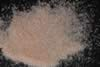

|
DOCUMENTATION_FORMAT: MINERAL
SAMPLE_ID: HS114.1B, HS114.2B, HS114.3B, HS114.4B, HS114.6
MINERAL_TYPE: Nesosilicate
MINERAL: Almandine (Garnet group)
FORMULA: (Fe+2)3Al2(SiO4)3
FORMULA_HTML: Fe+23Al2(SiO4)3
COLLECTION_LOCALITY: Warren County, New York
ORIGINAL_DONOR: Hunt and Salisbury Collection
CURRENT_SAMPLE_LOCATION: USGS Denver Spectroscopy Laboratory
ULTIMATE_SAMPLE_LOCATION: USGS Denver Spectroscopy Laboratory
SAMPLE_DESCRIPTION:
Forms series with Pyrope and with Spessartine.
"This is a common garnet of schists and gneisses and also occurs in intermediate to acidic igneous rocks. It is the most widespread variety of garnet found as a detrital mineral in sedimentary rocks. Again, this spectrum is dominated by the intense absorption at 1.28 µm; and 1.7 µm; due to the ferrous iron in eight-fold coordination. Also, there is a rapid fall off to the blue caused by both ferrous and ferric ion absorptions. The well defined band at 0.7 µm; confirms the presence of Fe+3 substituted for Al+3, and the suggestion of a band near 0.85µm; in the smallest particle size is consistent with this - even though the combination of the visible and near-infrared intense absorptions provide a well-resolved maximum near 0.85 µm, especially in the larger particle size samples. The visible spectrum shows features at 0.37, 0.43, 0.51, and 0.57 µm;, which is quite similar to the spectrum of spessartine, with the exception of the very sharp 0.41 µm; Mn+2 band, which is absent."
Hunt, G.R., J.W. Salisbury, and C.J. Lenhoff, 1973, Visible and near-infrared spectra of minerals and rocks: VI. Additional silicates. Modern Geology, v. 4, p. 85-106.
Grain size fractions are indicated by the extension after the sample number:
.1B = <5 µm
.2B = <74 µm
.3B = 74-250 µm
.4B = 250-1200 µm
.6 = cut slab
IMAGE_OF_SAMPLE:

END_SAMPLE_DESCRIPTION.
XRD_ANALYSIS:
40 kV - 30 mA, 7.3 -9.5 keV
File: alma114.out, *_mdi (smear mount on quartz plate)
References: Borg and Smith (1969), JCPDS #9-427, DHZ, v. 1a (1982),
Huebner's reference patterns
Found: Garnet; very weak un indexed reflection at 2.29 Angstroms
Comment: Very sharp reflections indicate excellent crystallinity
and suggest compositional homogeneity. Garnet ao=11.51+/-3 Angstroms,
consistent with almandine composition (at 11.526 Angstroms). Unusual rise in
background centered about 42 degrees 2 theta.
J.S. Huebner, J. Pickrell, T. Schaefer, written communication 1994
END_XRD_ANALYSIS.
COMPOSITIONAL_ANALYSIS_TYPE: EM # XRF, EPMA, ICP(Trace), WChem
| COMPOSITION KEYWORD |
Oxide ASCII |
Amount | Weight Percent, % |
Oxide html |
|---|---|---|---|---|
| COMPOSITION: | SiO2 | 40.40 | wt% | TD>SiO2|
| COMPOSITION: | TiO2 | 0.07 | wt% | TiO2 |
| COMPOSITION: | Al2O3 | 22.97 | wt% | Al2O3 |
| COMPOSITION: | Cr2O3 | 0.01 | wt% | Cr2O3 |
| COMPOSITION: | V2O3 | 0.01 | wt% | V2O3 |
| COMPOSITION: | FeO | 22.45 | wt% | FeO |
| COMPOSITION: | NiO | 0.02 | wt% | NiO |
| COMPOSITION: | MnO | 0.53 | wt% | MnO |
| COMPOSITION: | MgO | 11.05 | wt% | MgO |
| COMPOSITION: | CaO | 4.27 | wt% | CaO |
| COMPOSITION: | Total | 101.79 | wt% | |
| COMPOSITION: | O=Cl,F,S | wt% | #correction for Cl, F, S | |
| COMPOSITION: | New Total | 101.79 | wt% |
COMPOSITION_TRACE: None
COMPOSITION_DISCUSSION:
None.
END_COMPOSITION_DISCUSSION.
MICROSCOPIC_EXAMINATION:
avg. grain size = 260µm
Conchoidally fractured grains, isotropic under cross-polarized light. About 3% thin fibrous inclusions. G. Swayze
END_MICROSCOPIC_EXAMINATION.
SPECTROSCOPIC_DISCUSSION:
END_SPECTROSCOPIC_DISCUSSION.
SPECTRAL_PURITY: 1b2_3_4_ # HS114.1B # 1= 0.2-3, 2= 1.5-6, 3= 6-25, 4= 20-150 microns
SPECTRAL_PURITY: 1b2_3_4_ # HS114.2B # 1= 0.2-3, 2= 1.5-6, 3= 6-25, 4= 20-150 microns
SPECTRAL_PURITY: 1b2b3b4_ # HS114.3B # 1= 0.2-3, 2= 1.5-6, 3= 6-25, 4= 20-150 microns
SPECTRAL_PURITY: 1b2_3_4_ # HS114.4B # 1= 0.2-3, 2= 1.5-6, 3= 6-25, 4= 20-150 microns
SPECTRAL_PURITY: 1b2_3_4_ # HS114.6 # 1= 0.2-3, 2= 1.5-6, 3= 6-25, 4= 20-150 microns
{kind=link}